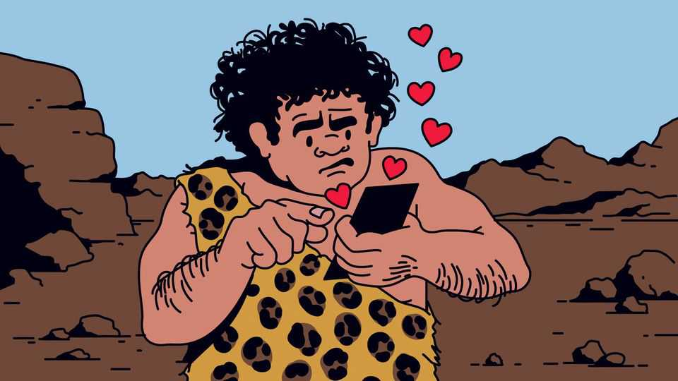

Culture | Passion and pre-history

If you want an exciting first date this Valentine’s Day, forget dinner and a screening of “Wuthering Heights”. Try zip-lining instead. This is the advice of Justin Garcia, an evolutionary biologist and head of the Kinsey Institute, one of the world’s best-known centres of research into sex. A day of climbing hills to throw yourself off cliffs lets you “walk and talk while experiencing something novel and thrilling together”. Thus, you will get to know each other better. And because of a psychological principle known as “misattribution of arousal”, your companion may start to associate you with thrilling feelings. “Yes, this is how sexologists approach first dates,” says Dr Garcia.
Many species reproduce sexually. Homo sapiens is the only one to write books worrying about how the process is changing. Humankind is facing an “intimacy crisis”, argues Dr Garcia in “The Intimate Animal”. Globally, one person in four is lonely. Without strong relationships, people live less cheerfully and die earlier. A survey in America found that 98% of people believe good, intimate relationships are a key element of a satisfied life.
Part of the problem is the mismatch between the world in which our brains evolved and the one in which people now search for love, contends Dr Garcia. In his telling, the two greatest changes to human courtship in the past 4m years were the invention of farming 12,000 years ago and the spread of the internet in the 1990s. Agriculture led to the accumulation of wealth, which in turn led to marital norms designed to preserve capital for a family or clan. The internet also transformed how people find partners.
Whereas our hunter-gatherer ancestors would pick a mate out of a small selection of people they already knew (for hunter-gatherer bands consisted of only a few dozen people), modern singles face a seemingly endless choice of strangers on their smartphones. To cope with such dizzying numbers, they apply filters for everything from minimum height to “must like bird-watching” and “must not be a lawyer”.
Yet the must-have traits that people demand in dating filters are woeful predictors of compatibility. Humans evolved to evaluate potential mates face-to-face, taking into account hard-to-describe qualities such as smell, touch and chemistry. A soft-lit photo and a list of arbitrary traits are no substitute. Small wonder that our caveman brains feel flummoxed. In one survey Dr Garcia conducted, he found that nearly half of single Americans thought that technology had made it harder to form real connections, and that younger adults were most likely to feel this way.
Paul Eastwick, a professor of psychology at the University of California, Davis, goes further. In “Bonded by Evolution”, he concedes that dating apps have created new opportunities for people with niche preferences, limited social networks or who are too shy to initiate contact in person. However, they can be a huge waste of time—a typical user spends 90 minutes a day gawping and swiping. Lacking the old-fashioned safeguard of someone in the village warning you that so-and-so is a creep, the apps have an “abundance of creeps”. Half the women who use them report being harassed. And people who scroll through hundreds of options online may head into real-world dates with the attitude that they are “the consumer who deserves to be impressed”. If so, they will “find it hard to open up to someone”, Dr Eastwick writes.
He has another worry about dating apps: he frets that they inadvertently promote a warped view of evolutionary psychology, which can bleed into misogyny. It starts with the accurate observation that, when picking mates, women have evolved to be choosier than men, as is the case in several other species where the female must invest a large amount of time and energy in each pregnancy, whereas the male invests only a little. This difference, it turns out, is much greater online than in real life. At a speed-dating event where face-to-face conversations have taken place, women are somewhat less likely to say yes to a second date than men (35% to 50%). On a dating app, with only pictures and text to go on, women are dramatically less likely to swipe right (5% to 50%).
So many men on apps face frequent rejection. And in the manosphere they find an explanation for their humiliation, apparently grounded in science: that women have evolved to be interested only in handsome men with plentiful resources to help ensure that their offspring can survive and reproduce. Since this is natural, it is inevitable, goes the deterministic argument popular with incels. So men must either become ripped, loaded and dominant or retreat to their bedrooms and denounce all women as manipulative gold-diggers. In fact, although women are indeed more likely than men to say they prefer a high-earning partner, they care more about kindness. And anyone can be kind.
Dr Garcia, who has a side job as chief scientific adviser to Match.com, is less gloomy about dating apps than Dr Eastwick, who rages against the “capitalist machinations of Match.com”. But both authors offer similar ideas for how to make shrewder use of them. The key is to understand the limits of the information dating apps convey, and move swiftly to acquire the more useful sort. Dr Garcia suggests having a video chat before meeting in person. Dr Eastwick favours dating fewer people, drawn from a wider pool, and spending more time with them. If you are not sure of someone after a first date, go on a second; people often change their minds on second impressions. But stop at three, since the chance of clicking after that is relatively small.
Both books conclude on a hopeful note. The dating scene may seem daunting, and some people obviously start with unearned advantages. Yet defeatism is unwarranted—whether about technology or biology. Both writers emphasise cultivating real-world, mixed-sex social networks, rather than living on your phone. Friendships can often turn romantic. Look at who is in front of you, advises Dr Garcia. The grass is not greener on the other side, but where you water it.
Dr Eastwick suggests hosting “used-date” parties, where each singleton brings someone they met online and liked, but only as a friend. “Your ‘meh’ is surely someone else’s ‘mm-hmm’,” he predicts. Another technique, which Homo sapiens’ forebears often employed, is this: if you can’t find a match where you are, try moving. People’s Stone Age brains are wired to seek intimacy. You won’t find it by hiding in a cave. ■
For more on the latest books, films, TV shows, albums and controversies, sign up to Plot Twist, our weekly subscriber-only newsletter